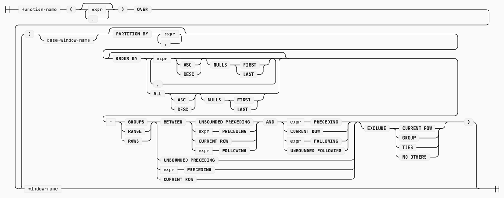

datafusion 窗口函数执行分析
API: 使用窗口函数
窗口函数是针对数据分析的一个 SQL 查询扩展，其执行顺序如下图中，

一般的，窗口函数的语法如下：  来源：https://duckdb.org/docs/stable/sql/functions/window_functions
datafusion 提供了对窗口函数的支持，不过，目前的版本支持程度仍然不如 duckdb，我目前发现的问题是： frame 中目前仅支持 literal expr, 这限制了基于当前行的 dynamic range 的支持能力，例如，典型的 上年同期年累 这样的计算。
在 duckdb 中，可以表示为
SUM( SUM(amount) ) over (order by order_date
range between to_days( order_date - (date_trunc('year', order_date'year') - interval 1 year)) preceding
and interval 1 year preceding )
本文分析的目的之一就是对 datafusion 的窗口函数执行机制进行研究，并评估为其添加上这类能力的可行性。
SPI：创建自定义的窗口函数
datafusion 中支持4种 自定义函数：
-
udf: scalar 函数
-
udtf: 表函数，如 csv_read 之类的函数
-
udwf: User Define Window Function：以 partition 为单位的窗口函数
主要针对非聚合类的窗口函数，参见：
see: datafusion/physical-expr/src/window/standard.rs StandardWindowExpr::evaluate(按照这个源代码整理，与代码注释对应不上)
[ uses_window_frame][ supports_bounded_execution][ include_rank]function_to_implement functions true * * [ evaluate]nth_value false (default) * true [ evaluate_all_with_rank]rank, dense_rank, cume_dist false * false (default) [ evaluate_all]
窗口函数：
category functions supported desc uses_window_frame supports_bounded_execution include_rank ranking cume_dist df, duckdb 累积百分比 X X true ranking dense_rank df, duckdb 1,2,2,3 风格的排名 X true true ranking rank df, duckdb 1,2,2,4 风格的排名 X true true ranking ntile(n) df, duckdb 按 n 等分 X X X ranking percent_rank df, duckdb 排名百分比 X X true ranking row_number df, duckdb 行号 X true X analytical first_value(expr) df, duckdb X X X analytical lag(expr, offset, default) df, duckdb X true X analytical last_value(expr) df, duckdb X X X analytical lead(expr, offset, default) df, duckdb X true X analytical nth_value(expr, n) df, duckdb true true X -
-
udaf: User Define Aggregate Function 针对形如 SUM, COUNT 之类的函数，自定义函数参考：advanced udaf 核心接口是 Accumulator, GroupsAccumulator
classDiagram
class WindowUDFImpl {
<<trait>>
+partition_evaluator(PartitionEvaluatorArgs args) PartitionEvaluator
}
class PartitionEvaluator {
<<trait>>
+is_causal(): bool
+uses_window_frame(): bool
+supports_bounded_execution(): bool
+include_rank(): bool
+evaluate(&~ArrayRef~ values, &Range~usize~ range): Result<ScalarValue>
+evaluate_all(values:&~ArrayRef~, num_rows:uszie): Result<ArrayRef>
+evaluate_all_with_rank(usize num_rows, &[Range~usize~] ranks_in_partition) -> Result<ArrayRef>
}
WindowUDFImpl .. PartitionEvaluator
class AggregateUDFImpl {
<<trait>>
+accumulator(AccumulatorArgs args): Result~Box~dyn Accumulator~~
+create_groups_accumulator(AccumulatorArgs args): Result<Box<dyn GroupsAccumulator>>
}
class Accumulator {
<<trait>>
+update_batch(&[ArrayRef]): Result<()>
+retract_batch(&[ArrayRef]): Result<()>
+state(): Result<Vec<ScalaValue>>
+merge_batch(&[ArrayRef]): Result<()>
+evaluate(): Result<ScalaValue>
}
class GroupsAccumulator {
<<trait>>
+update_batch(&[ArrayRef], Option<&BooleanArray>, usize): Result<()>
+state(EmitTo): Result<ArrayRef>
+merge_batch(&[ArrayRef], &[usize], Option<&BooleanArray>, usize): Result<()>
+evaluate(EmitTo): Result<ArrayRef>
}
AggregateUDFImpl .. Accumulator
AggregateUDFImpl .. GroupsAccumulator
classDiagram
class WindowExpr {
<<trait>>
+evaluate_args(batch: &RecordBatch) Result~Vec<ArrayRef>~
+evaluate(batch: &RecordBatch) Result~ArrayRef~
+evaluate_stateful(partition_batches: &PartitionBatches, window_agg_state: &mut PartitionWindowAggStates) Result~()~
}
note for AggregateWindowExpr "for user-defined-aggregate-function"
class AggregateWindowExpr {
<<trait>>
}
note for StandardWindowExpr "for user-defined-window-function"
class StandardWindowExpr {
<<struct>>
}
class SlidingAggregateWindowExpr {
<<struct>>
}
class PlainAggregateWindowExpr {
<<struct>>
}
WindowExpr <|-- AggregateWindowExpr
AggregateWindowExpr <|-- SlidingAggregateWindowExpr
AggregateWindowExpr <|-- PlainAggregateWindowExpr
WindowExpr <|-- StandardWindowExpr
物理计划生成：选择算子、WindowExpr 决策树
flowchart TD
A[ 1: function type ?] == window function ==> StandardWindowExpr
A == aggregate function ==> C[frame start unbounded ?]
A2[2: frame end bounded ?]
A2 == unbounded following ==> WA[WindowAggExec]
A2 == bounded ==> BWA[BoundedWindowAggExec]
C == unbounded preceding ==> plain[PlainAggregateWindowExpr]
C == bounded ==> sliding[SlidingAggregateWindowExpr]
具体，可以查看如下的代码实例，通过代码的调试等方式，可以帮助我们理解不同的算子下的执行流程：
| function | operator | window expr | demo |
|---|---|---|---|
| aggregate | window agg exec | plain aggregate | test_sum_1 |
| aggregate | window agg exec | sliding aggregate | test_sum2 |
| aggregate | bounded window agg exec | plain aggregate | test_sum4 |
| aggregate | bounded window agg exec | sliding aggregate | test_sum3 |
算子: WindowAggExec 分析
根据上述分析，WindowAggExec 的 frame 形如：between bounded and unbounded following
- 从上游获取 RecordBatch，追加到 self.batches 中，直至全部读取完成，进入到第2步。
- 将全部的 RecordBatch 合并为一个 RecordBatch
- 在 batch 上求值 sort columns (partition key, maybe + order key)
- 按照 partition key 对 batch 进行 partition，由于 batch 已经排序，因此，在batch 中每个分区的数据已经是连续存放的，一个分区的数据接着
上一个分区的数据。每个分区可以表示为 Range
- foreach partition，调用函数 WindowAggExec::compute_window_aggregates 进行窗口函数求值
- foreach window_expr 调用 window_expr.evaluate(batch) 求值（多个窗口函数可以共享同一个窗口）
- window_expr.evaluate(batch) : single partition, single window_exp
- foreach row in batch
AggregateWindowExpr::get_result_column- 计算 当前行的 window range
- window_expr.
get_aggregate_result_inside_range: evaluate for single row with a range(window)-
PlainAggregateWindowExpr::get_aggregate_result_inside_range: window 0..end end 是递增的
frame: 0 .. LAST
- 对比 last_range，将 shift in rows 调用 accumulator.update_batch
- 获取 accumulator.evaluate
-
SlidingAggregateWindowExpr::get_aggregate_result_inside_range:
frame: bounded .. LAST
- 对比 last_range，将 shift out rows 调用 accumulator.retract_batch
- 将 shift in rows 调用 accumulator.update_batch
- 获取 accumulator.evaluate
-
总之： SlidingAggregateWindowExpr::get_aggregate_result_inside_range 可以覆盖 PlainAggregateWindowExpr::get_aggregate_result_inside_range 的能力。
-
- foreach row in batch
- window_expr.evaluate(batch) : single partition, single window_exp
- foreach window_expr 调用 window_expr.evaluate(batch) 求值（多个窗口函数可以共享同一个窗口）
算子： BoundedWindowAggExec
对 frame.end 不是 unbounded following 的窗口类型，datafusion 视为 bounded window，使用 BoundedWindowAggExec 算子来处理该窗口函数的计算。
根据 frame.start 的不同，会选择不同类型的 WindowExpr:
- 对标准的窗口函数（UDWF），使用 StandardWindowExpr + PartitionEvaluator:
select *, rank() over (partition by product_id order by order_date) as rank1 from t1 - 对聚合类窗口函数（UDAF）, frame.start 是 unbounded preceding 的，使用 PlainAggregateWindowExpr + Accumulator
select *, sum(amount) over (partition by product_id order by order_date rows between unbounded preceding and 1 following) as amounts1 from t1 - 对聚合类窗口函数（UDAF）, frame.start 不是 unbounded preceding 的，使用 SlidingAggregateWindowExpr + Accumulator
select *, sum(amount) over (order by order_date range between interval '1 days' preceding and interval '1 days' following) as slide_amounts from t1
执行流程：
- BoundedWindowAggStream 从上游读取 RecordBatch (已按 window order by 进行排序)
- 根据 RecordBatch 更新 partition_key -> PartitionBatchState( record_batch )
- 调用 BoundedWindowAggStream::compute_aggregates 计算窗口函数
- foreach window_expr, call window_expr.evaluate_stateful (1 window_expr, multi partition)
- foreach partition, call window_expr.get_result_column (1 window_expr, 1 partition)
- foreach row which is not calculated previous
- 计算 row 对应的 frame range
- 如果 RecordBatch 满足 frame range，则调用 window_expr.get_aggregate_result_inside_range 进行聚合求值
- 相比上一行的frame，对移出的行调用 accumulator::retract_batch
- 对移入的行调用 accumulator::update_batch
- foreach row which is not calculated previous
- foreach partition, call window_expr.get_result_column (1 window_expr, 1 partition)
- foreach window_expr, call window_expr.evaluate_stateful (1 window_expr, multi partition)
#![allow(unused)]
fn main() {
struct BoundedWindowAggStream {
window_expr: Vec<WindowExprRef>,
input_buffer: RecordBatch,
partition_buffers: PartitionBatches, // IndexMap<PartitionKey, PartitionBatchState>
window_agg_states: Vec<PartitionWindowAggStates>, // indexed by window_expr, IndexMap<PartitionKey, WindowState>
}
struct PartitionBatchState {
record_batch: RecordBatch,
most_recent_row: Option<RecordBatch>
is_end: bool,
n_out_row: usize
}
struct WindowState {
state: WindowAggState,
window_fn: WindowFn, // 累加器会持有状态，通过 update_batch, retract_batch, merge_batch 更新状态
}
struct WindowAggState {
window_frame_range: Range<usize>,
window_frame_ctx: Option<WindowFrameContext>,
last_calculated_index: usize,
offset_pruned_rows: usize,
out_col: ArrayRef,
n_row_result_missing: usize,
is_end: bool
}
}classDiagram
class BoundedWindowAggStream {
<<object>>
window_exprs: Vec~WindowExprRef~
input_buffer: RecordBatch
finished: bool
}
class PartitionBatchState {
<<object>>
record_batch: RecordBatch
most_recent_row: Option<RecordBatch>
is_end: bool
n_out_row: usize
}
class WindowState {
<<object>>
state: WindowAggState
window_fn: WindowFn
}
class WindowAggState {
<<object>>
window_frmae_range: Range<usize>
window_frame_ctx: Option<WindowFrameContext>
last_cacluated_index: usize
offset_pruned_rows: usize
out_col: ArrayRef
n_row_result_missing: usize
is_end: bool
}
class WindowFn {
<<object>>
partition_evaluator: PartitionEvaulator
accumulator: Accumulator
}
BoundedWindowAggStream o-- PartitionBatchState : partition_buffers[PartitionKey]
BoundedWindowAggStream o-- WindowState : window_agg_state[window_expr_idx][PartitionKey]
WindowState o-- WindowAggState
WindowState o-- WindowFn
BoundedWindowAggStream::poll_next_inner- poll RecordBatch from input
BoundedWindowAggStream::compute_aggregates- foreach window_expr,
window_expr::evaluate_stateful(partion_batches, partition_window_agg_states)AggregateWindowExpr::evalute_statefulforeach partition 1.
- foreach window_expr,
处理过程：
- 无需在读取了全部分区数据后，再进行窗口函数计算，可以在读入 batch 的过程中增量的处理。
- 思考：WindowAggExec 是否可以转换为 逆序后使用 BoundedWindowAggExec?